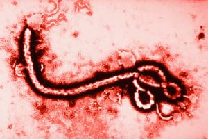
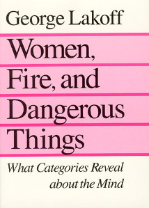
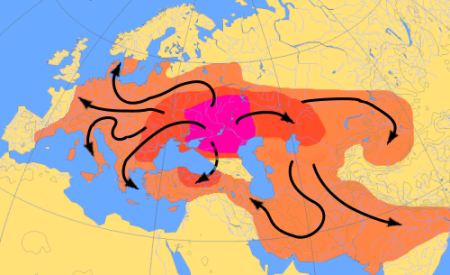

# #crappyjokes Did you know deer can jump higher than the average house? It's because of their strong hind legs and the fact that the average house can't jump. --- <iframe data-autoplay width="840" height="690" src="http://www.youtube.com/embed/mvBaHIGhrX8"></iframe> <br> <correct>Legião Urbana - Meninos e Meninas</correct><br> <correct>Brazilian Portuguese</correct> --- <danger>NO!</danger>  --- ### Don't come to class sick! * Lecture attendance isn't mandatory * Recitation can be missed with a doctor's notes * We're happy to go over course content one-on-one when you feel better. * You'll recover sooner in bed than in lecture! --- # Indo-European Languages of Europe! ### LING 1020 - Will Styler --- ## Today's Agenda * Grammatical Gender and Noun Class * 'Indo-European' * Indo-European Families * Germanic, Celtic, and Italic Languages and Features --- ### Part of learning about languages is learning about what languages do * When it's appropriate, we'll start lectures by talking about a grammatical feature or linguistic idea * It'll usually be linked to what we're discussing * Today, **Grammatical Gender!** --- ### Grammatical Gender Grouping words into multiple genres, and using different forms and "agreements" for each * We call it "Grammatical Gender" when masculine/feminine are used, "Noun class" when there are other categories * These terms are often used interchangeably --- <lang>French</lang><br><ldata>IE:Italic - All over</ldata> * Un homme parfait - 'a perfect man' (masculine) * Une femme parfaite - 'a perfect woman' (feminine) * Un appartement parfait - 'a perfect apartment' (masculine) * Une tondeuse parfaite - 'a perfect lawnmower' (feminine) --- ### Agreement When words or forms change to "match" a characteristic of another part of the sentence --- <lang>Portuguese</lang><br><ldata>IE:Italic - Brazil, Portugal</ldata> * Um gato preto - 'a black cat' (masculine) * Uma gata preta - 'a black cat' (feminine) * Um garfo prateado - 'a silver fork' (masculine) * Uma colher prateada - 'a silver spoon' (feminine) --- <lang>Russian</lang><br><ldata>IE:Slavic - Russia</ldata> * красивый дом (Krasiviy dom) - 'Pretty house' (masculine) * красивая девушка (Krasivaya devushka) - 'Pretty girl' (feminine) * красивое море (Krasivoye Morye) - 'Pretty sea' (neuter) --- ### Grammatical Gender Facts * Often based on the form of the word, rather than the meaning * The Russian word for "moon" is feminine, but the Polish word is masculine. * Usually "masculine" and "feminine", but there's also "neuter" * Other words (adjectives, verbs, articles) change to "agree" with the gender * It's not always about Gender at all... --- ### Animate/Inanimate Classes * Marks gender based on animacy or "alive-ness" * Used in Basque, English (he/she/it), Totonac, Navajo, Tamil, PIE (??), and more! * In Navajo: Human > Infant/Big Animal > Medium-sized Animal > Small Animal > Natural Force > Abstraction --- <lang>Zande</lang><br><ldata>Niger-Congo:Zande - Congo</ldata> 1. Human (Male) - "Man" 2. Human (Female) - "Wife" 3. Animate - "Beast" 4. Other - "House" --- <lang>Swahili</lang><br><ldata>Niger-Congo:Bantu - East Africa</ldata> 1. Singular Persons 2. Plural Persons 3. Singular Plants 4. Plural Plants 5. Singular Fruits 6. Plural Fruits 7. Singular things 8. Plural things 9. Singular Animals 10. Plural Animals 11. Singular ??? 15. Verbal nouns 16. Things close to other things (and so on) --- <lang>Dyirbal</lang><br><ldata>Pama-Nyungan - Australia</ldata> 1. animate objects, men 2. women, water, fire, violence 3. edible fruit and vegetables 4. miscellaneous (includes things not classifiable in the first three) ---  --- ### Grammatical Gender is common! * ~45% of languages have gender or noun classes ([according to WALS](http://wals.info/chapter/31)) * ~75% of gender-using languages use sex-based Gender * (Remember, it's still arbitrary) * It's *very* often found in Indo-European, but also common elsewhere * Features like this *support* a relation, but don't prove it. --- Keep an eye out for grammatical gender in the rest of the course! --- <img class="big" src="humorimg/backattheranch.jpg"> --- # 'Indo-European' --- ### About Indo-European * Around 440 Languages (half are Indo-Aryan) * 45% of the world's population speak an IE language * IE is the largest major family *by number of speakers* * Extremely well studied (we've been after it since the 16th century) * Based on cognates, and some shared structures --- ### "Where's Indo-Europe?" * That's a great way to start a fist-fight at a Linguistic Society of America meeting * Pereltsvaig handles this nicely. * The current "best bet" is the Pontic Steppe, but that could change! --- ### The Spread of Indo-European (maybe)  --- # "So, what's the family tree like?" --- ## It's complicated --- ### Proto-Indo-European * All IE languages descended from "Proto-Indo-European" ("PIE") * PIE must have had a mother, but we don't *reliably* know what it was * ...but that hasn't stopped people from trying * "Nostratic" (with IE, Uralic, Caucasian, Dravidian, Afroasiatic) * "Eurasiatic" (with IE, Uralic, Altaic, Eskimo-Aleut, Kartvelian, Dravidian, Korean) * "Pontic" (with IE, Northwest Caucasian) * These macro-families are not "wrong", just not provably right. --- ## What about from PIE down? --- ### That's complicated, too! <a href="http://upload.wikimedia.org/wikipedia/commons/thumb/4/4f/IndoEuropeanTree.svg/1280px-IndoEuropeanTree.svg.png"><img class="big" src="lotwimg/iechart.png"></a> --- ### We can simplify a bit... <img class="big" src="lotwimg/indoeuropean.gif"> --- ### ... and a bit more <img class="big" src="lotwimg/iefamilies.png"> --- <img width="1200px" src="lotwimg/iefamiliesmap.png"> --- Today, we're going to talk about... * Germanic * Celtic * Italic ("Romance") * We'll hit Slavic Wednesday, Indo-Iranian next week * We won't have time for Albanian, Greek, and Armenian :( --- ### Germanic <img width="1200px" src="lotwimg/iefamiliesmap.png"> (in red) --- ### Features of Germanic * "Umlaut" - Vowel changes in related words (like "sing/sang", "mouse/mice") * "Grimm's Law" - PIE /t d dh/ -> Germanic /θ t d/ * Consonant heavy, first syllable stress * Grammatical Gender * Huge numbers of vowels * English: 15, German: 16, Swedish: 18, Danish: 17 * Portuguese: 9, Spanish: 5, Russian: 11, Farsi: 6, Gaelic: 11 --- **English** All human beings are born free and equal in dignity and rights. They are endowed with reason and conscience and should act towards one another in a spirit of brotherhood. **Dutch** Alle mensen worden vrij en gelijk in waardigheid en rechten geboren. Zij zijn begiftigd met verstand en geweten, en behoren zich jegens elkander in een geest van broederschap te gedragen. **German** Alle Menschen sind frei und gleich an Würde und Rechten geboren. Sie sind mit Vernunft und Gewissen begabt und sollen einander im Geist der Brüderlichkeit begegnen. --- <lang>German</lang><br><ldata>IE:Germanic - Germany</ldata> * der Wagen 'The car' * die Stadt 'The city' * das Auto 'The car' --- <lang>Afrikaans</lang><br><ldata>IE:Germanic - South Africa</ldata> * Daughter of Dutch, split in the 18th Century * Dutch settlers in South Africa became isolated, and bam, Afrikaans * Lots of borrowing from Bantu and Khoisan languages, also English and Malay * 15-23 million speakers in South Africa and Namibia --- <lang>Afrikaans</lang><br><ldata>IE:Germanic - South Africa</ldata> <iframe data-autoplay width="840" height="690" src="http://www.youtube.com/embed/m3TTi_gAS5c"></iframe> --- <lang>Icelandic</lang><br><ldata>IE:Germanic - Iceland</ldata> <iframe data-autoplay width="840" height="690" src="http://www.youtube.com/embed/7QKAdCZEkcY"></iframe> --- <lang>Frisian</lang><br><ldata>IE:Germanic - Germany and Netherlands</ldata> <iframe data-autoplay width="840" height="690" src="http://www.youtube.com/embed/TRfodZPL57A"></iframe> --- ### English and Frisian are isolated from the rest of Germanic <img class="big" src="lotwimg/indoeuropean.gif"> --- ## Celtic <img width="1200px" src="lotwimg/iefamiliesmap.png"> (in orange) --- ### Features of Celtic * Verb-Subject-Object (VSO) word order * Vowel mutation for plurals * Counting by twenties * Grammatical Gender --- ### Counting by twenties?? --- <lang>Cornish</lang><br><ldata>IE:Celtic - UK </ldata> * 1 - onan * 2 - dew * 11 - unnek * 15 - pymthek * 17 - seytek * 20 - ugens * 21 - onan warn ugens * 22 - dew warn ugens * 31 - uunek warn ugens * 35 - pymthek warn ugens * 37 - seytek warn ugens * 40 - dew-ugens --- <img class="big" src="humorimg/rooster.jpg"> --- **English** All human beings are born free and equal in dignity and rights. They are endowed with reason and conscience and should act towards one another in a spirit of brotherhood. **Breton** Dieub ha par en o dellezegezh hag o gwirioù eo ganet an holl dud. Poell ha skiant zo dezho ha dleout a reont bevañ an eil gant egile en ur spered a genvreudeuriezh. **Welsh** Genir pawb yn rhydd ac yn gydradd â'i gilydd mewn urddas a hawliau. Fe'u cynysgaeddir â rheswm a chydwybod, a dylai pawb ymddwyn y naill at y llall mewn ysbryd cymodlon. --- <lang>Irish</lang><br><ldata>IE:Gaelic - Ireland</ldata> * Is carr é - 'It's a car' (Car is masculine) * Is cláirseach í - 'It's a harp' (Harp is feminine) * Madra beag - 'Little dog' (Dog is masculine) * Cláirseach bheag - 'Little harp' --- <section data-background="img/clickerbkgrnd.png"></section> <lang>Irish</lang><br><ldata>IE:Gaelic - Ireland</ldata> * Madra beag - 'Little dog' (masculine) * Cláirseach bheag - 'Little harp' (feminine) 'City' (chathair) is a feminine noun. A little city is... A. chathair beag B. chathair bheag --- <section data-background="img/clickerbkgrnd.png"></section> <lang>Irish</lang><br><ldata>IE:Gaelic - Ireland</ldata> * Madra beag - 'Little dog' (masculine) * Cláirseach bheag - 'Little harp' (feminine) 'City' (chathair) is a feminine noun. A little city is... A. chathair beag <correct>B. chathair bheag</correct> --- <lang>Irish</lang><br><ldata>IE:Gaelic - Ireland</ldata> <iframe data-autoplay width="840" height="690" src="http://www.youtube.com/embed/jD-_l5p3MzI"></iframe> --- <lang>Scottish Gaelic</lang><br><ldata>IE:Gaelic - Scotland</ldata> <iframe data-autoplay width="840" height="690" src="http://www.youtube.com/embed/Lktt_DlpsJA"></iframe> --- ## Italic ("Romance") <img width="1200px" src="lotwimg/iefamiliesmap.png"> (in blue) --- ### These all came from Latin <img class="big" src="lotwimg/romancetree.png"> --- ### Features of Italic * Strict SVO word order * Grammatical gender! * Complex verb conjugations --- ### ... how complex are we talking? --- <lang>English</lang><br><ldata>IE:Germanic - All over</ldata> We would have been sleeping <lang>Spanish</lang><br><ldata>IE:Italic - All over</ldata> Durmiéramos Sleep-2pl.SUBJ.PAST.IMPERFECT --- <lang>Spanish</lang><br><ldata>IE:Italic - Spain/The Americas</ldata> * El perro magnifico - 'The Magnificent dog' (masculine) * La puerta magnifica - 'The Magnificent door' (feminine) * El coche pequeño - 'The little car' (masculine) * La arpa pequeña - 'The little harp' (feminine) --- ### Romance languages are fairly well known in the US * (except one) --- <lang>Romanian</lang><br><ldata>IE:Italic - Romanian</ldata> * Romanian's Italic, and born of Latin * The grammar is Italic * The sound system is Italic * ... but it's spent way too much time around Slavic languages --- <center> <style type="text/css"> .tg {border-collapse:collapse;border-spacing:0;} .tg td{font-family:Arial, sans-serif;font-size:24px;padding:10px 5px;border-style:solid;border-width:1px;overflow:hidden;word-break:normal;} .tg th{font-family:Arial, sans-serif;font-weight:normal;font-size:24px;padding:10px 5px;border-style:solid;border-width:1px;overflow:hidden;word-break:normal;} .tg .tg-e3zv{font-weight:bold} </style> <table class="tg"> <tr> <th class="tg-e3zv">English</th> <th class="tg-e3zv">Spanish</th> <th class="tg-e3zv">French</th> <th class="tg-e3zv">Italian</th> <th class="tg-e3zv">Romanian</th> <th class="tg-e3zv">Russian</th> </tr> <tr> <td class="tg-031e">'four'</td> <td class="tg-031e">cuatro</td> <td class="tg-031e">quatre</td> <td class="tg-031e">quattro</td> <td class="tg-031e">patru</td> <td class="tg-031e">chitiri</td> </tr> <tr> <td class="tg-031e">'five'</td> <td class="tg-031e">cinco</td> <td class="tg-031e">cinq</td> <td class="tg-031e">cinque</td> <td class="tg-031e">cinci</td> <td class="tg-031e">pyat</td> </tr> <tr> <td class="tg-031e">'love'</td> <td class="tg-031e">amor</td> <td class="tg-031e">amour</td> <td class="tg-031e">amore</td> <td class="tg-031e">iubire</td> <td class="tg-031e">lyubov</td> </tr> <tr> <td class="tg-031e">'hope'</td> <td class="tg-031e">esperanza</td> <td class="tg-031e">esperance</td> <td class="tg-031e">speranza</td> <td class="tg-031e">nădejde</td> <td class="tg-031e">nadezhda</td> </tr> <tr> <td class="tg-031e">'to read'</td> <td class="tg-031e">leer</td> <td class="tg-031e">lire</td> <td class="tg-031e">leggere</td> <td class="tg-031e">i citi</td> <td class="tg-031e">chitat'</td> </tr> </table> </center> --- <lang>Romanian</lang><br><ldata>IE:Italic - Romania</ldata> <iframe data-autoplay width="840" height="690" src="http://www.youtube.com/embed/TcRWiz1PhKU"></iframe> --- <lang>Romanian</lang><br><ldata>IE:Italic - Romania</ldata> <iframe data-autoplay width="840" height="690" src="http://www.youtube.com/embed/Bk7Sxpmr7wI"></iframe> --- <danger>We ran out of time in lecture, so this is where we stopped!</danger> --- ### Wrapping up * Grammatical gender is the assignment of categories to nouns, and agreement with those categories * Indo-European is the most widely spoken language family * We don't know too much about its origins * Germanic, Celtic and Romance languages are awesome --- ## Next time: Russian, and the beauty of Case. <correct>No reading</correct> --- <huge>Thank you!</huge> http://savethevowels.org/world/slides/lotw_4.html